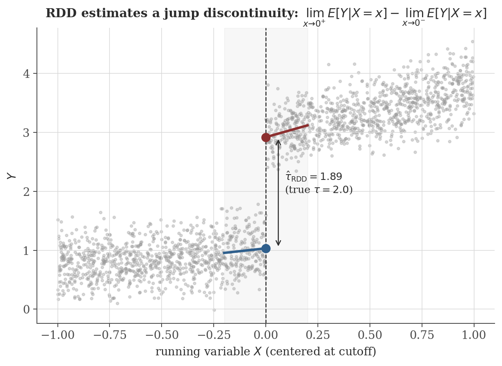
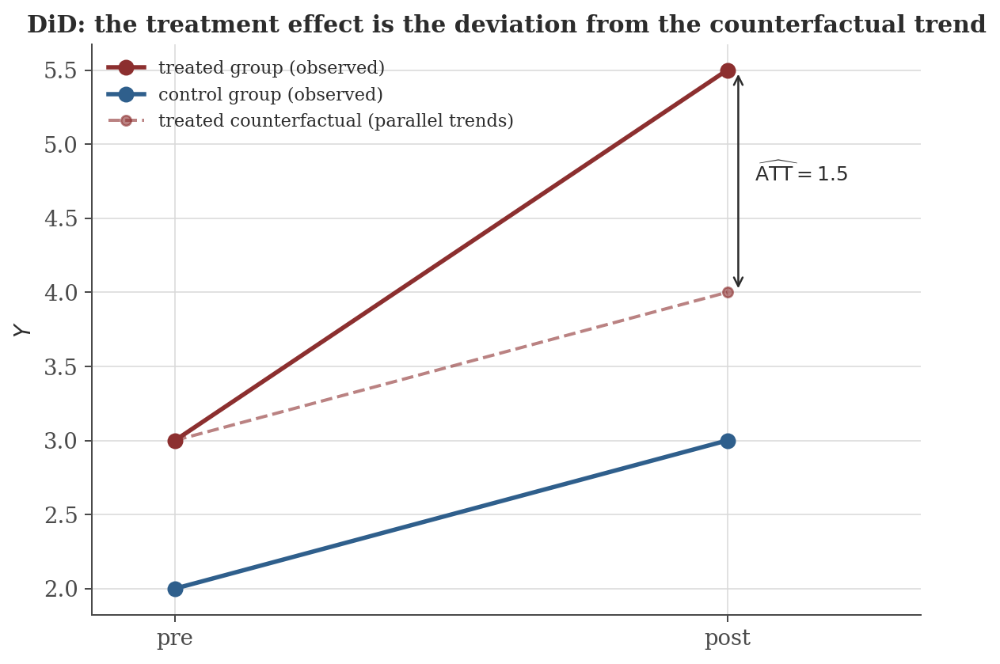

Causal Inference
Disclaimer: These are my personal notes compiled for my own reference and learning. They may contain errors, incomplete information, or personal interpretations. While I strive for accuracy, these notes are not peer-reviewed and should not be considered authoritative sources. Please consult official textbooks, research papers, or other reliable sources for academic or professional purposes.
Contents
- Potential outcomes and the fundamental problem
- Identification assumptions, and why each is needed
- What a naive comparison actually estimates
- Randomized experiments
- Instrumental variables and the Wald estimator
- Regression discontinuity
- Difference-in-differences and parallel trends
- The propensity score theorem
- Computation
- Common pitfalls
- Connections
- References
1. Potential outcomes and the fundamental problem
For unit $i$ and binary treatment $D_i\in\{0,1\}$, $Y_i(1)$ and $Y_i(0)$ are the outcomes that would occur under treatment and control respectively. The individual treatment effect is $Y_i(1)-Y_i(0)$; the observed outcome is $Y_i = D_iY_i(1)+(1-D_i)Y_i(0)$.
The Average Treatment Effect is $\mathrm{ATE}=E[Y_i(1)-Y_i(0)]$; the Average Treatment Effect on the Treated is $\mathrm{ATT}=E[Y_i(1)-Y_i(0)\mid D_i=1]$ — a different quantity in general, since the treated population need not resemble the population at large.
For any unit $i$, only one of $Y_i(1),Y_i(0)$ is ever observed — whichever $D_i$ selects. The individual treatment effect is not a quantity any amount of data on unit $i$ alone can recover; every method in this note instead identifies some population-level average by substituting a comparison group for unit $i$'s unobserved counterfactual.
This framing matters because it makes precise what regression coefficients estimate under what conditions — and, by the same token, precisely why the regression methods note's OLS machinery does not automatically answer a causal question just because it is applied to observational data.
2. Identification assumptions, and why each is needed
- SUTVA (Stable Unit Treatment Value Assumption): unit $i$'s potential outcomes depend only on $i$'s own treatment, not on others' treatment status (no interference/spillovers) and there is only one version of "treated" (no hidden variation). Why needed: without it, $Y_i(1)$ is not even well-defined — "$i$ treated" could mean different things depending on who else is treated. Failure example: vaccinating one person in a population changes the disease exposure of untreated neighbors (herd immunity), so their $Y_i(0)$ is not a fixed number independent of the treatment assignment of others.
- Ignorability / unconfoundedness: $(Y_i(0),Y_i(1)) \perp D_i \mid X_i$ — conditional on observed covariates $X_i$, treatment assignment carries no information about potential outcomes. Why needed: without it, any comparison between treated and untreated groups conflates the treatment effect with pre-existing differences (Section 3 makes this precise). Failure example: sicker patients are more likely to receive an aggressive treatment, so treated and untreated patients differ in prognosis even before treatment, for reasons related to the very outcome being measured.
- Overlap / positivity: $0<P(D_i=1\mid X_i)<1$ for every value of $X_i$ with positive probability. Why needed: if some covariate stratum is always (or never) treated, there is no comparison group at that stratum to estimate a counterfactual from — the data simply contains no information about what would happen otherwise for those units, however large the sample.
3. What a naive comparison actually estimates
$$E[Y_i\mid D_i=1] - E[Y_i\mid D_i=0] = \underbrace{E[Y_i(1)-Y_i(0)\mid D_i=1]}_{\mathrm{ATT}} + \underbrace{E[Y_i(0)\mid D_i=1] - E[Y_i(0)\mid D_i=0]}_{\text{selection bias}}.$$
The selection bias term compares what the treated group's outcome would have been without treatment to the control group's actual outcome — a difference that has nothing to do with the treatment effect and vanishes only under ignorability, since $(Y_i(0))\perp D_i \Rightarrow E[Y_i(0)\mid D_i=1]=E[Y_i(0)\mid D_i=0]$. This decomposition is the formal version of "correlation is not causation": the naive comparison always estimates $\mathrm{ATT}+\text{selection bias}$, and every identification strategy in this note is a different way of arguing the selection bias term is zero (or of estimating it separately, as in DiD, Section 7).
4. Randomized experiments
If $D_i$ is assigned independently of $(Y_i(0),Y_i(1))$ (e.g. by a coin flip), then ignorability holds unconditionally, and $E[Y_i\mid D_i=1]-E[Y_i\mid D_i=0]$ is unbiased for the ATE.
This is immediate from Section 3: random assignment makes $D_i\perp(Y_i(0),Y_i(1))$ by construction (not by an assumption requiring justification from domain knowledge), so the selection bias term is exactly zero and $\mathrm{ATT}=\mathrm{ATE}$ (the treated group is, in expectation, a random sample of the whole population). This is precisely why randomized experiments are the benchmark the rest of this note's methods are built to approximate under weaker, observational conditions.
5. Instrumental variables and the Wald estimator
When treatment is not randomly assigned and no covariate set plausibly satisfies ignorability, an instrument $Z_i$ can substitute for randomization if it satisfies:
- Relevance: $\mathrm{Cov}(Z_i,D_i)\neq0$ — the instrument actually moves treatment.
- Exclusion restriction: $Z_i$ affects $Y_i$ only through $D_i$, not directly.
- Independence: $Z_i$ is as good as randomly assigned — independent of $(Y_i(0),Y_i(1))$.
Under a constant-effects linear model $Y_i=\alpha+\tau D_i+u_i$ with $\mathrm{Cov}(Z_i,u_i)=0$ (implied by independence and exclusion): $\mathrm{Cov}(Z_i,Y_i) = \tau\,\mathrm{Cov}(Z_i,D_i) + \mathrm{Cov}(Z_i,u_i) = \tau\,\mathrm{Cov}(Z_i,D_i)$, so
well-defined precisely because relevance rules out division by zero.
Two-stage least squares generalizes this beyond a single binary instrument: regress $D$ on $Z$ (and covariates) to get fitted values $\hat D$, then regress $Y$ on $\hat D$. By the regression methods note's projection view of OLS (Section 2 there), $\hat D=P_{\mathrm{col}(Z)}D$ is exactly the part of $D$'s variation spanned by the instrument — 2SLS estimates the causal effect using only the treatment variation that the (assumed exogenous) instrument itself explains, discarding the rest as potentially confounded.
6. Regression discontinuity
When treatment is assigned by whether a running variable $X_i$ crosses a known cutoff $c$ (e.g. a test score threshold for a scholarship), units just above and just below $c$ are, absent any special reason for anything else to also change discontinuously at $c$, comparable — differing systematically only in treatment status.
$$\tau_{\mathrm{RDD}} = \lim_{x\to c^+} E[Y_i\mid X_i=x] \;-\; \lim_{x\to c^-} E[Y_i\mid X_i=x].$$
This is, precisely, a claim that $x\mapsto E[Y_i\mid X_i=x]$ has a jump discontinuity at $c$ in the sense of the continuity note (Section 4 there) — the one-sided limits both exist, and their difference (rather than their common value, which would signal no effect) is the causal estimate. In practice, each one-sided limit is estimated by local linear regression on data within a bandwidth $h$ of $c$, exactly the two separate fits shown in the figure below.

7. Difference-in-differences and parallel trends
With outcomes observed pre- and post-treatment for both a treated and an untreated group, DiD identifies a treatment effect under an assumption weaker than unconditional ignorability:
$$E[Y_i(0)_{\mathrm{post}} - Y_i(0)_{\mathrm{pre}} \mid D_i=1] = E[Y_i(0)_{\mathrm{post}} - Y_i(0)_{\mathrm{pre}} \mid D_i=0]$$
— absent treatment, the treated group's outcome would have trended the same as the control group's, even if their levels differ (unlike ignorability, this permits arbitrary time-invariant differences between groups).
Under parallel trends, $\widehat{\mathrm{ATT}} = \big(\bar Y_{1,\mathrm{post}}-\bar Y_{1,\mathrm{pre}}\big) - \big(\bar Y_{0,\mathrm{post}}-\bar Y_{0,\mathrm{pre}}\big)$ is unbiased for the ATT in the post period.

8. The propensity score theorem
Conditioning on a high-dimensional $X_i$ to satisfy ignorability runs into overlap problems quickly (Section 2) — few or no comparable units may share an identical $X_i$. The propensity score, $e(X_i)=P(D_i=1\mid X_i)$, gives a way to condition on a single scalar instead.
If $(Y_i(0),Y_i(1))\perp D_i \mid X_i$, then $(Y_i(0),Y_i(1))\perp D_i \mid e(X_i)$.
This is a genuine dimension-reduction result, not merely a convenient approximation: it says that matching or weighting on the scalar $e(X_i)$ alone recovers exactly the same identification as conditioning on the full covariate vector $X_i$, provided the (unverifiable in general, but sometimes very plausible) ignorability assumption holds for $X_i$ in the first place. In practice $e(X_i)$ is unknown and estimated (typically by logistic regression of $D$ on $X$), which introduces its own estimation-error considerations not covered by the theorem itself.
9. Computation
The figures above are generated by causal-inference/generate_figures.py. The snippet below runs the RDD and DiD estimators shown in the figures, and separately verifies the omitted-variable-bias mechanism behind Section 3's selection-bias term: a naive regression that omits a confounder $X$ affecting both treatment and outcome is biased by exactly $\gamma\cdot\delta$, where $\gamma$ is $X$'s effect on $Y$ and $\delta$ is the regression coefficient of $X$ on $D$.
import numpy as np
rng = np.random.default_rng(2)
n = 5000
X = rng.normal(0, 1, n) # confounder
D = 0.5 * X + rng.normal(0, 1, n) # treatment depends on the confounder
tau_true, gamma = 2.0, 1.5 # true effect, and X's effect on Y
Y = 1 + tau_true * D + gamma * X + rng.normal(0, 1, n)
naive = np.linalg.lstsq(np.column_stack([np.ones(n), D]), Y, rcond=None)[0]
full = np.linalg.lstsq(np.column_stack([np.ones(n), D, X]), Y, rcond=None)[0]
delta = np.linalg.lstsq(np.column_stack([np.ones(n), D]), X, rcond=None)[0][1]
print(f"naive tau_hat (omits X): {naive[1]:.4f} (true tau = {tau_true})")
print(f"full tau_hat (controls X): {full[1]:.4f}")
print(f"predicted bias = gamma*delta = {gamma*delta:.4f} actual bias = {naive[1]-tau_true:.4f}")
Actual output:
naive tau_hat (omits X): 2.5876 (true tau = 2.0)
full tau_hat (controls X): 1.9987
predicted bias = gamma*delta = 0.5826 actual bias = 0.5876The predicted and actual bias agree closely: controlling for the confounder recovers the true effect almost exactly, while omitting it produces bias numerically consistent with Section 3's decomposition — the naive coefficient is genuinely $\mathrm{ATE}+\text{selection bias}$, not merely "less accurate."
10. Common pitfalls
Unlike overlap (checkable — do treated and untreated units coexist at every covariate value present in the data), ignorability is a claim about unobserved potential outcomes and can never be directly verified, only argued for on substantive grounds (or replaced by a research design — randomization, an instrument, a discontinuity — that does not require it to hold for arbitrary unobserved confounders).
Similar pre-period trends across groups are consistent with, but do not prove, the assumption in Section 7 — parallel trends is a statement about the post-period counterfactual, which is by construction unobserved. Pre-trend similarity is suggestive evidence, not verification.
As $\mathrm{Cov}(Z_i,D_i)\to0$, Section 5's estimator's denominator approaches zero, and even small violations of the exclusion restriction get amplified without bound in the ratio — a "weak" instrument does not merely widen confidence intervals modestly, it can make the point estimate itself dominated by whatever small direct effect $Z$ has on $Y$, in violation of exclusion.
If units can influence which side of $c$ they land on (e.g. a student who knows the exact scholarship cutoff score retaking a test to just clear it), the comparability of units just above and below $c$ breaks — those just above are no longer a "similar but treated" version of those just below, but a selected group of manipulators. Checked in practice via a density test for a discontinuity in the running variable itself at $c$.
11. Connections
- Regression methods. Section 5's 2SLS is literally regression-methods.html's orthogonal-projection view of OLS applied twice; naive OLS of $Y$ on $D$ is exactly the Section 3 decomposition's biased comparison unless ignorability (or an equivalent design) holds.
- Continuity and limits. The sharp RDD estimand (Section 6) is precisely a one-sided-limit jump-discontinuity statement, and local linear regression is precisely how each one-sided limit is estimated in practice.
- Time series analysis. DiD's parallel-trends assumption implicitly requires understanding the untreated group's own trend as a legitimate forecast of the counterfactual — the same forecasting logic developed there, now applied as an identifying assumption rather than a prediction goal.
12. References
- Imbens, G. W., & Rubin, D. B. (2015). Causal Inference for Statistics, Social, and Biomedical Sciences. Cambridge University Press.
- Angrist, J. D., & Pischke, J.-S. (2009). Mostly Harmless Econometrics. Princeton University Press.
- Rosenbaum, P. R., & Rubin, D. B. (1983). The central role of the propensity score in observational studies for causal effects. Biometrika, 70(1), 41–55.
- Morgan, S. L., & Winship, C. (2014). Counterfactuals and Causal Inference (2nd ed.). Cambridge University Press.